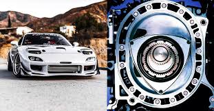

Mazda and the Rotary engine
Mazda is one of the older Japanese car manufaturers. They started off making three wheeled utility vehicles for the Japanese population to use during the rebuilding after the world wars. For car enthusiasts, they are best know for their impressive sports car of the 90s and early 2000s. Mazda is not owned by any other manufactuerer and is not in partnership with any either making it very unique. Mazda took a gamble on a non-pistion engine called the rotary which is famous for being lightweight and screaming at high RMP. While orignially in the Mazda Cosmo, it is most commonly know to be in the three generations of Rx7.
